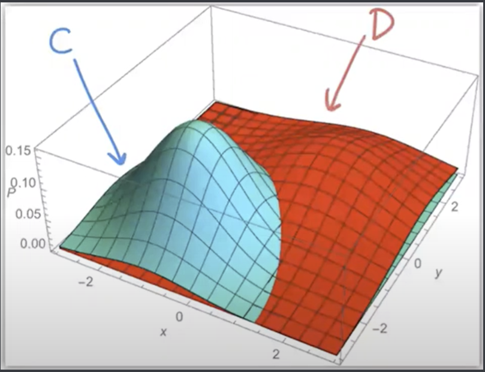
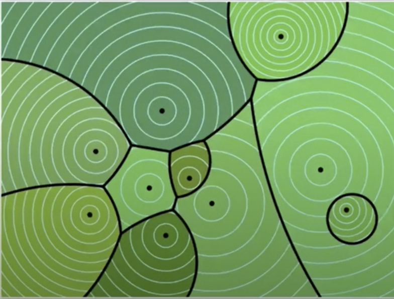
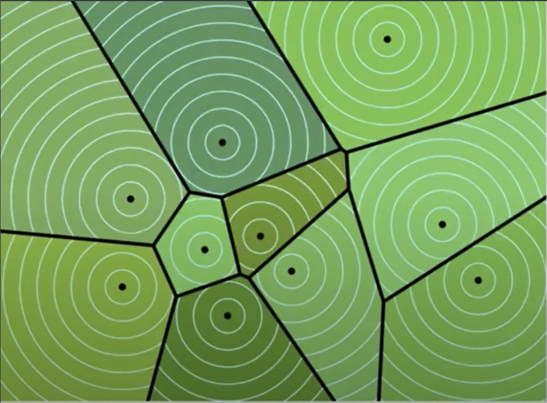

Gaussian Discriminant Analysis¶
In this chapter, we’ll apply the decision theory we learned last chapter to fitting data that has Gaussian distributions.
Gaussian Discriminant Analysis is a way of doing decision analysis to create a classifier based on the fundamental assumption that real world data tends to be normally distributed, or close enough.
The isotropic multivariate Gaussian distribution is a distribution with mean vector \(\mu\) and constant covariance \(\sigma^2\). The PDF for the isotropic multivariate is below:
With a constant covariance \(\sigma^2\), the variance is the same in every direction. Note: \(d\) is the dimension of our feature space.
Note the normalization term \(\frac{1}{(\sqrt{2\pi}\sigma)^d}\): this ensures the volume under the PDF is exactly 1. However, this is not that interesting.
The interesting part is the exponential of a NEGATIVE quadratic function of \(x\)- this will be the determining factor in prediction. Note that the term \(||x-\mu||^2\) is the squared distance from point \(x\) to the mean of the distribution. So we assume that all points in classes come from different isotropic normal distributions.
For each class C, suppose we estimate a mean for all data points in that class as \(\mu_C\), as well as a variance \(\sigma_C^2\) AND a prior \(\pi_C = P(Y = C)\). So all these values are available to us beforehand.
Now, given a point \(x\), we want to predict its class. We use Bayes decision rule \(r^*(x)\) to predict this class, since it maximizes the posterior probability (assuming a symmetric loss function), which can be represented by \(f(X=x|Y=C) = f_C(x)\pi_C\): the product of the prior of class C and the class-conditional probability of \(x\) being in class C (basically, the density of our model at x). We ignore the denominator in maximization, since it’s constant for each class.
So if the goal is to maximize our density \(f_C(x)\pi_C\), so we maximize the log of it since the log function is monotonically increasing. So we maximize
Note that \(Q_C(x)\) is quadratic, and thus much simpler to maximize.
We compute \(Q_C(x)\) for each class, then choose \(C\) that maximizes \(Q_C(x)\).
Side note: for asymmetric loss functions, we simply add a product term to the posterior probability: \( f_C(x)\pi_CL(., .)\).
Quadratic Discriminant Analysis¶
Suppose we have 2 classes C, D. Then our Bayes decision rule \(r^*(x)\) will state to pick class C if \(Q_C(x) > Q_D(x)\), and pick D if \(Q_D(x) \ge Q_C(x)\). This means our decision function is \(Q_C(x) - Q_D(x)\), and its sign will indicate which class to pick. Of course, the Bayes decision boundary is the set of points where \(Q_C(x) - Q_D(x) = 0\).
In one dimension, Bayes decision boundary may have 1 or (at most) 2 points. It could also have 0 points- leading to ALWAYS picking class C. However, in \(d\) dimensions, the BDB is the set of solutions called a quadric, or conic section.
Let’s look at a diagram of 2 class-conditional distributions:
The 2 distributions are different Gaussians with different bell curves. We see the BDB as the intersection between the blue and red: where the 2 posterior probabilities (PDFs * priors on z axis) are equal. At any point \(x\), the higher curve will be the corresponding class to predict for \(x\).
Isotropic implies isocontours of each distribution are all spheres (not ellipses).
What about more than 2 classes? Fortunately, QDA extends to multiclass classification very nicely. For each class, simply compute a corresponding \(Q_C(x)\), then use the maximum for a prediction!
Here’s a visualization with many classes. We see many bell curves here, and the centers of each curve represent a \(\mu_C\) for each class. Note some have larger variances than others, from the wider isocontour circles. The boundaries of this diagram are all conic sections, resulting in interesting intersections.
We can also find the exact posterior probability that a point \(x\) is in a predicted class \(C\). We want to recover the posterior probability for each class.
In a 2 class case, we use Bayes:
Recall that \(Q_C(x) = \ln((\sqrt{2\pi})^df_C(x)\pi_C)\), so \(e^{Q_C(x)} = (\sqrt{2\pi})^df_C(x)\pi_C\). So we know
\(P(Y=C|X=x) = \frac{e^{Q_C(x)}}{Q_C(x)+Q_D(x)} = \frac{1}{1+e^{Q_D(x)-Q_C(x)}}\)
This can be reduced to the sigmoid function: \(s(Q_C(x) - Q_D(x))\).
Therefore, the sigmoid function \(s(Q_C(x) - Q_D(x))\) gives us posterior probability- basically, the probability we get our prediction correct.
Linear Discriminant Analysis¶
LDA is a variant of QDA, only this time with linear decision boundaries. It’s much less likely to overfit than QDA, and because of this, it’s actually more popular.
Always use validation to decide between whether to use QDA or LDA.
We make a big assumption here with LDA: all Gaussians have the same variance \(\sigma^2\). This assumption makes simplifying equations much easier.
Let’s expand our decision function \(Q_C(x) - Q_D(x)\):
So now we just choose class \(C\) that maximizes the linear discriminant function.
In the 2-class case, the decision boundary is where the decision function = 0: \(w \cdot x + \alpha = 0\). The posterior probability \(P(Y=c|X=x) = s(w \cdot x + \alpha)\).
For more than 2 classes, LDA produces a Vorenoi diagram:
Maximum Likelihood Estimation¶
So to estimate the posterior, we need to estimate the class-conditional density \(f_C(x)\) AND the class’s prior \(\pi_C\). How?
We use maximum likelihood estimation: we are finding the parameters that MAXIMIZE the probability that they produce the observed data. Specifically, parameters that maximize the likelihood function \(L\). It is one method of density estimation, where we estimate a PDF from data.
Likelihood of A Gaussian¶
How do we find the best-fit Gaussian distribution (guess its parameters) given data \(X_1, ..., X_n\)?
The likelihood of generating sample points \(X_1,...,X_n\) is \(L(\mu, \sigma; X_1, ..., X_n) = f(X_1)f(X_2)...f(X_n)\). The probability of generating an individual point is 0, but so these aren’t really probabilities (but they kind of are).
We take the log-likelihood and denote it \(l(\mu, \sigma; X_1, ..., X_n)\). This can be reduced to a summation:
Now, we want to maximize this function by setting the gradient of the log-likelihood with respect to \(\mu\) AND another gradient with respect to \(\sigma\) equal to 0. Then, solving, we get:
Note that we don’t actually know \(\mu\) so we have to substitute \(\hat{\mu}\).
In other words, the sample mean and variance estimate the Gaussian mean and variance for class C.
Extending this back to QDA, we estimate the class-conditional means and variances for each class C as \(\hat{\mu}_C\) and \(\hat{\sigma}_C^2\) by using the above formulas. Then, we estimate the priors: \(\hat{\pi}_C = \frac{n_C}{\sum_{D}n_D}\). Once we have those, we can build our quadratic discriminant function and make predictions.
For LDA, the process is very similar: we compute the means and priors in the exact same way as QDA. However, we made the assumption that all classes had the same variance:
This is called the pooled within-class variance: For every sample point, we subtract the mean FOR THAT POINT’S CLASS- so it’s “within-class variance”. But we pool it (sum it) across all classes to get our final variance estimate.